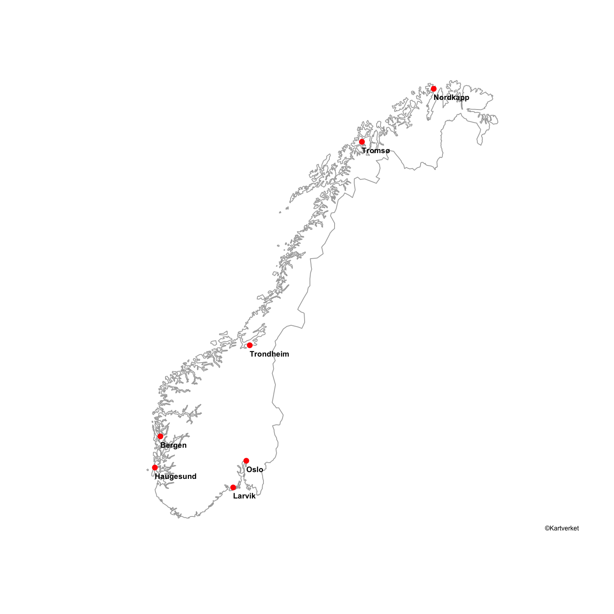
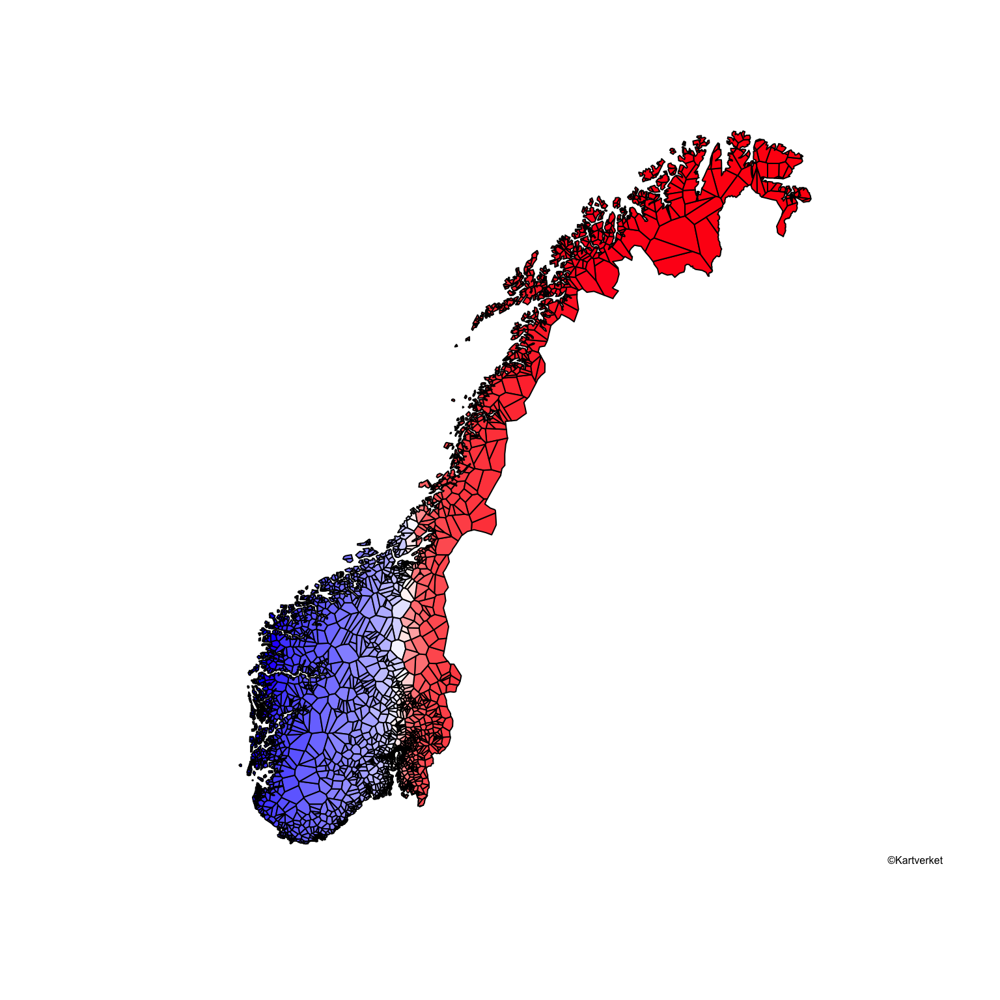
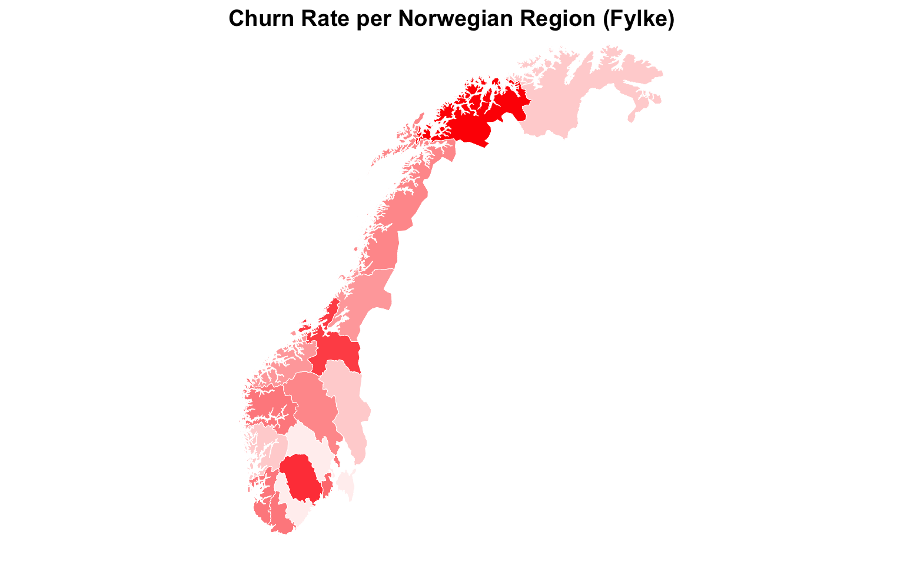
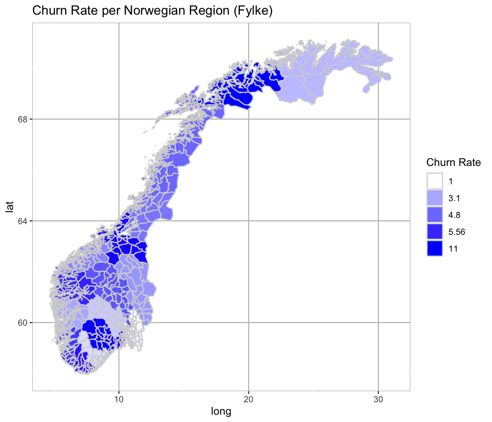

Create Maps in R using Base, Lattice, ggplot2, GoogleVis, leaflet and rCharts
The following code will help you build your own maps in R using base plotting, Lattice, ggplot2, the GoogleVis Chart API, Rcharts and leaflet. This blog was first published in 2015 and updated in 2019. Enjoy and have fun with it!
Prerequisites
You may want to download the metadata files available on my GitHub repo here:
The first shapefile of Norway is from the website of the Norwegian Mapping Authority (Kartverket). It was downloaded back in 2015. We will use the shapefile called NO_Arealdekke_pol.shp. Don’t forget to refer to them when using the map and please read the terms of use.
The second shapefile is from the website of the Global Administrative Areas at this location. I downloaded the shapefile for Norway back in 2015. You can also download shapefiles for other countries there.
You may also need a file containing the X-Y coordinate of spatial locations you want to plot. In our case, we will use a file containing the Norwegian postal code areas. This file is available here.
Building the Map of Norway in R
library(plyr)
library(dplyr)
library(ggplot2)
library(lattice)
library(rgdal)
library(rgeos)
library(spatstat)
library(sp)
library(maptools)
library(maps)
library(RColorBrewer)
library(grDevices)
library(reshape2)
library(rCharts)
library(leaflet)
library(knitr)
library(base64enc)
suppressPackageStartupMessages(library(googleVis)) Building Maps using R’s Base Plotting
There are several ways to build maps in R. First let’s build a simple map of Norway showing a few Norwegian cities with R’s base plotting system.
fylke <- readOGR(dsn = "33_N5000_shape",
layer = "NO_Arealdekke_pol")## OGR data source with driver: ESRI Shapefile
## Source: "/Users/isavalet/Documents/R/GitHub/ivalette.github.io/33_N5000_shape", layer: "NO_Arealdekke_pol"
## with 1324 features
## It has 5 fieldsfylke <- fylke[fylke$OBJTYPE != "Havflate",]
norway <- gUnaryUnion(fylke)
cities <- data.frame(city = c("Oslo", "Larvik", "Bergen", "Haugesund",
"Trondheim", "Nordkapp", "Tromsø"),
LAT = c(59.9084400, 59.0686800, 60.3713600, 59.4094000,
63.4240100, 70.9821400, 69.6478700),
LON = c(10.7230100, 10.0473000, 5.3537800, 5.2995100,
10.4409600, 25.9707600, 18.9566000),
stringsAsFactors = F)
proj <- CRS(proj4string(norway))
coordinates(cities) <- ~ LON + LAT
proj4string(cities) <- CRS("+init=epsg:4326")
cities_proj <- spTransform(cities, proj)
plot(norway, border = "darkgrey")
points(cities_proj, col = "red", pch = 16)
text(cities_proj, labels = cities$city, cex = 0.6, font = 2, offset = 0.5, adj = c(0,2))
legend("bottomright", legend = c("©Kartverket"), col = black, cex = 0.5, bty = "n")
Performing a Voronoi Tessellation with Base Plotting
Now, let’s build a map showing all postal code areas with a Voronoi Tessellation:
We plot the map of Norway as previously shown with the first shapefile of Norway.
We plot all the 4463 postal codes coordinates just as we plotted a few cities earlier.
We perform a Voronoi Tessellation. See the following wiki link for more details on Voronoi Tessellation.
We use the “spatstat” package in R to do this.
postal <- read.delim("postnummer.csv", colClasses = "character")
postal <- transform(postal, LON = as.numeric(LON), LAT = as.numeric(LAT))
postal2 <- postal[!grepl("ikkje i bruk", postal$POSTSTAD),]
post <- ddply(postal2, ~ LON + LAT, summarise, POSTNR = paste(POSTNR, collapse = ", "))
proj <- CRS(proj4string(norway))
coordinates(post) <- ~ LON + LAT
proj4string(post) <- CRS("+init=epsg:4326")
post_proj = spTransform(post, proj)
plot(norway, border = "darkgrey")
points(post_proj, col = "red", pch = ".")We are now ready to perform the Voronoi Tessellation.
bboks_norway <- bbox(norway)
bboks_owin <- owin(bboks_norway[1,], bboks_norway[2,])
post_ppp <- as.ppp(coordinates(post_proj), W = bboks_owin)
diagram <- dirichlet(post_ppp)
diagram_poly <- as(diagram, "SpatialPolygons")
proj4string(diagram_poly) <- proj
plot(diagram_poly)
We remove what would be plotted outside the borders of Norway
diagram_poly_norway <- gIntersection(diagram_poly, norway, byid=TRUE)
plot(diagram_poly_norway)We plot Norway with its flag colors. Each postal code areas get its own colors.
pal <- colorRampPalette(c("blue", "white", "red"))
plot(diagram_poly_norway, col = pal(4463), border = "black")
legend("bottomright", legend = c("©Kartverket"), col = black, cex = 0.5, bty = "n")
Building Maps in R using Lattice
Now let’s say we want to visualize a variable called churn showing the churn rate for each of the 19 Norwegian regions (fylke). We want the results to be shown in a map.
norway2 <- readOGR(dsn = "NOR_adm" ,
layer = "NOR_adm2")
norway2_data <- norway2@data
churn <- data.frame(NAME_1 = c( "Akershus" , "Ãstfold", "Aust-Agder", "Buskerud",
"Finnmark", "Hedmark" , "Hordaland", "Møre og Romsdal" ,
"Nord-Trøndelag" , "Nordland" , "Oppland", "Oslo",
"Rogaland", "Sogn og Fjordane", "Sør-Trøndelag",
"Telemark", "Troms", "Vest-Agder" , "Vestfold" ),
Churn = c(1.0, 1.1, 1.5, 1.55, 2.9, 3.12, 3.1, 4.2, 4.3, 4.8,
5.1, 5.3, 5.5, 5.56, 7.9, 8.3, 11, 5.6, 6.1),
stringsAsFactors = F)Now let’s do some plotting with Lattice
norway2_new <- unionSpatialPolygons(norway2, norway2_data$ID_1)
norway3 <- SpatialPolygonsDataFrame(norway2_new, churn)
pal2 <- colorRampPalette(c("white", "red"))
trellis.par.set(axis.line=list(col=NA))
spplot(norway3, "Churn",
main="Churn Rate per Norwegian Region (Fylke)",
lwd=.4,
col="white",
col.regions=pal2(19),
colorkey = FALSE,
bty="n")
Building Maps in R with ggplot2
Now, let’s try to visualize the churn rate dataset using the ggplot2 package. We will reuse the churn dataframe from the last example.
norway2@data$id <- rownames(norway2@data)
norway2_points <- fortify(norway2, region="id")
norway2_df <- join(norway2_points, norway2@data, by="id")
merged <- merge(norway2_df, churn, by = "NAME_1")
merged <- merged[order(merged$order), ]
pal3 <- colorRampPalette(c("white", "blue"))
breaks <- c(quantile(merged$Churn))
q <- ggplot(data = merged, aes(x = long, y = lat, group = group))
q <- q + geom_polygon(color = "lightgrey", aes(fill = factor(Churn)))
q <- q + ggtitle("Churn Rate per Norwegian Region (Fylke)")
q <- q + scale_fill_manual( values = pal3(19), breaks= breaks )
q <- q + labs(fill="Churn Rate")
q <- q + theme(panel.background = element_rect(fill = "white", colour = "grey"),
panel.grid.major = element_line(colour = "grey"))
q
Building Interactive Maps in R using GoogleVis
Now let’s say we want to visualize a variable called profit and compare results across Nordic countries. We want the results to be shown in an interactive map. We use the R package called ‘Googlevis’ to do this. The basic idea behind the GoogleVis package is:
The R function creates an HTML page
The HTML page calls the Google Charts API
The results are displayed with an interactive HTML graphic
Please note that, you can choose to change the map settings to a European map using region=“150” in the GvisGeoChart command line. The default setting shows a world map. See GoogleVis Examples on how to get started with the GoogleVis package.
op <- options(gvis.plot.tag = 'chart')
revenue <- data.frame(Country = c("Norway", "Sweden", "Denmark", "Finland", "Iceland"),
Profit = c(10, 3, 5, 7, 5),
stringsAsFactors = F)
nordic <- gvisGeoChart(revenue,
locationvar = "Country",
colorvar = "Profit",
options = list(width = 600, height = 400,region = "154"))
plot(nordic)Building Interactive Maps in R using rCharts and leaflet
Finally, we want to visualize interactively a street view of Oslo, the capital of Norway, with the leaflet and rCharts package in R and plot some popups. rCharts is an incredibly easy way to create interactive javascript visualizations using R.
See leaflet for further details on how to get started with leaflet. See rCharts for further details on how to get started with rCharts.
map3 <- leaflet() %>%
addTiles() %>%
addMarkers(lng = 10.7246670, lat = 59.9140100, popup = "Hi. I am a popup") %>%
addMarkers(lng = 10.7645700, lat = 59.9085200, popup = "Hello Oslo!")
map3Acknowledgements and References
Thanks to Brian Caffo, Jeff Leek and Roger Peng from the John Hopkins Bloomberg School of Public Health, Department of Biostatistics. Your Data Science Specialization on Coursera inspired me.
Thanks a lot to the Norwegian Mapping Authority (Kartverket) for sharing shapefiles with data scientists.
A big big thanks to Karl Ove Hufthammer! His wonderful blog was a great source of inspiration and a main reference when writing this blog. The code for the Voronoi Tessellation is all his, I just copied it.
A big thanks to Erik Bolstad for making the csv files with postal code coordinates available in Norway.
Thanks to the Global Administrative Areas for giving access to shapefiles of the world.
Inspirational Blogs For Building Maps and Working with Spatial Objects
http://zevross.com/blog/2014/07/16/mapping-in-r-using-the-ggplot2-package/
http://cran.r-project.org/web/packages/googleVis/vignettes/googleVis_examples.html
https://github.com/hadley/ggplot2/wiki/plotting-polygon-shapefiles
R Session Info
sessionInfo()## R version 3.5.2 (2018-12-20)
## Platform: x86_64-apple-darwin15.6.0 (64-bit)
## Running under: macOS Mojave 10.14.6
##
## Matrix products: default
## BLAS: /Library/Frameworks/R.framework/Versions/3.5/Resources/lib/libRblas.0.dylib
## LAPACK: /Library/Frameworks/R.framework/Versions/3.5/Resources/lib/libRlapack.dylib
##
## locale:
## [1] en_US.UTF-8/en_US.UTF-8/en_US.UTF-8/C/en_US.UTF-8/en_US.UTF-8
##
## attached base packages:
## [1] stats graphics grDevices utils datasets methods base
##
## other attached packages:
## [1] googleVis_0.6.4 base64enc_0.1-3 knitr_1.25
## [4] leaflet_2.0.3 rCharts_0.4.5 reshape2_1.4.3
## [7] RColorBrewer_1.1-2 maps_3.3.0 maptools_0.9-9
## [10] spatstat_1.61-0 rpart_4.1-13 nlme_3.1-137
## [13] spatstat.data_1.4-0 rgeos_0.5-3 rgdal_1.4-8
## [16] sp_1.3-2 lattice_0.20-38 ggplot2_3.2.1
## [19] dplyr_0.8.3 plyr_1.8.4
##
## loaded via a namespace (and not attached):
## [1] Rcpp_1.0.2 deldir_0.1-23 assertthat_0.2.1
## [4] digest_0.6.22 mime_0.7 R6_2.4.0
## [7] evaluate_0.14 tensor_1.5 pillar_1.4.2
## [10] rlang_0.4.1 lazyeval_0.2.2 whisker_0.4
## [13] Matrix_1.2-15 goftest_1.2-2 rmarkdown_1.16
## [16] labeling_0.3 stringr_1.4.0 foreign_0.8-71
## [19] htmlwidgets_1.5.1 polyclip_1.10-0 munsell_0.5.0
## [22] shiny_1.4.0 compiler_3.5.2 httpuv_1.5.2
## [25] xfun_0.10 pkgconfig_2.0.3 mgcv_1.8-26
## [28] htmltools_0.4.0 tidyselect_0.2.5 tibble_2.1.3
## [31] codetools_0.2-15 crayon_1.3.4 withr_2.1.2
## [34] later_1.0.0 grid_3.5.2 jsonlite_1.6
## [37] xtable_1.8-4 gtable_0.3.0 magrittr_1.5
## [40] scales_1.0.0 stringi_1.4.3 promises_1.1.0
## [43] spatstat.utils_1.15-0 tools_3.5.2 RJSONIO_1.3-1.1
## [46] glue_1.3.1 purrr_0.3.3 crosstalk_1.0.0
## [49] abind_1.4-5 fastmap_1.0.1 yaml_2.2.0
## [52] colorspace_1.4-1